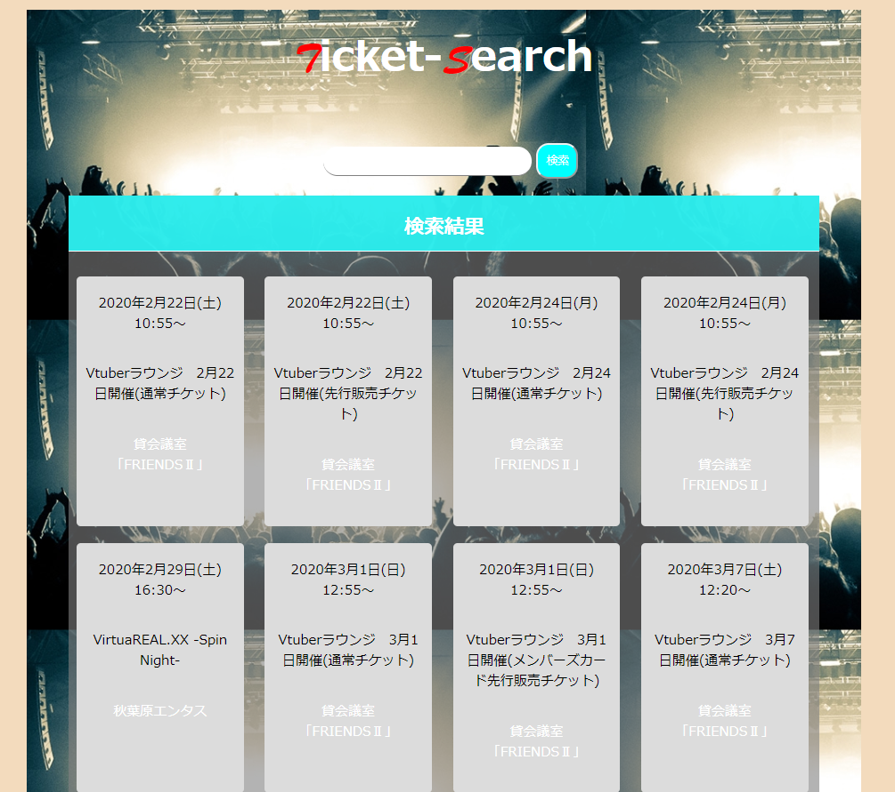
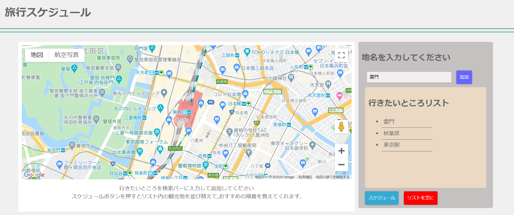
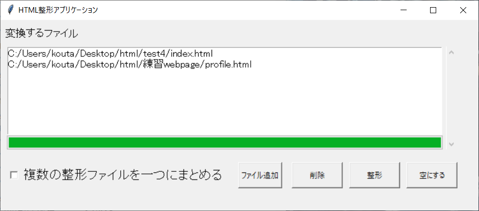
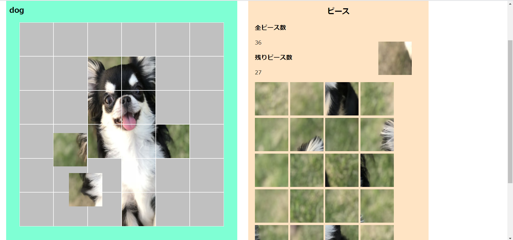
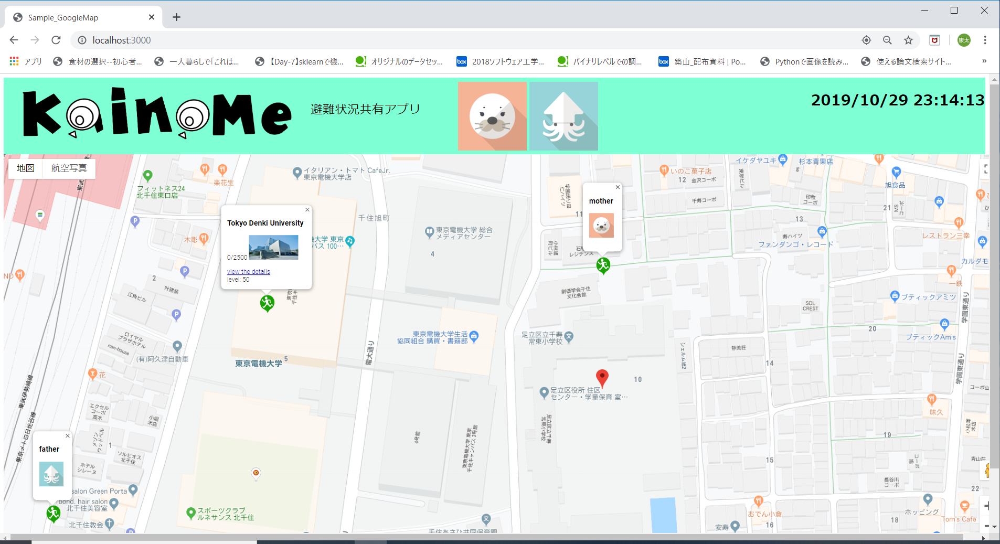
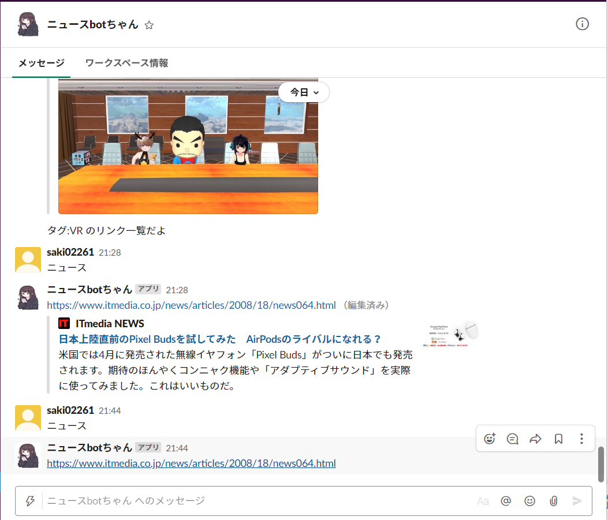

・大崎康太
➤東京電機大学 情報環境学研究科
・趣味
➤将棋、カラオケ、ライブ観戦
・資格
➤基本情報、応用情報、TOEIC695
History
- 2019 2月 インターン先でjavascriptとgoogleHomeを使ったアプリケーション開発
- 2019 3月 情報処理学会全国大会第81回
- 2019 10月 jphacks2019
- 2020 3月 電子情報通信学会広島学会
- 2020 2月 私立大学の依頼でアプリケーションの作成
- 2020 8月 サポーターズ 夏のハッカソン
- 2020 8月 パーソル プロセス&テクノロジー ビジネス立案ハッカソン
- 2020 9月 株式会社オロ 長期インターン開始
- 2020 10月 Computer Security Symposium2020
- 2020 11月 株式会社ラクスリクルーティング選考
言語
- JavaScript
- Python
- C
- Java
- PHP
- Ruby
- TypeScript
フレームワーク
- Flask Django
- Node.js Vue.js React.js
- Angular.js
データベース
- MySQL
- SQLite
- Postgres
- Realtime Database
クラウド
- Firebase
- Heroku
その他
- git
- Storybook
- Redmine
- Linux
Works
チケットサーチ

検索バーに入力すると
複数のチケットサイトから
入力したキーワードに関するイベントをスクレイピングするWebアプリです。
観光地スケジューリング

行きたい観光地の順番を
決めてくれるアプリです。
検索バーに行きたい観光地を入力し
追加ボタンを押すと行きたい場所のリストに加えられます。
スケジューリングボタンを押すとリスト内の場所を最適な順番に並び替えてくれます。
HTML整形アプリケーション

外部の私立大学教授からの依頼で
作成したアプリケーションです。
スクレイピングしたhtmlファイルから余計な空白や改行を省略し、
複数のファイルを一つのテキストファイルに変換するアプリです。
PuzzleMaker
KainoMe

KainoMeは近隣の避難所をマップ上に表示させ、ユーザは自分の家と避難所との距離を把握することができます。
また、避難所の情報（備蓄品、設備）ほか、リアルタイムで来た人数とCO₂濃度を読み取り、
その建物内にどれだけの人が流入しているかも表示します。
事前にアカウントを作成して、他のユーザ（ex.家族）とグループを作成すると、
家族の位置情報を確認することもできます。
SlackAPIを使ったニュース提供アプリ
すらレコ

ニュースを読む習慣を作るため作成しました
slackのワークスペース内のメンションから
単語を取り出し、ニュース記事と照合することで
普段の生活から好みの記事を取り出すことで差別化をしました。
顧客のニーズに答え対応できる
スキルを持ったエンジニア
学会での発表やハッカソンでの経験から
新しいアイデアや優れたスキルを持っているだけでは
認められないことが分かりました。
そのため、こういったエンジニアを目指したい
そのためにも、日々スキルを高めアウトプットしていきたいと思います。
以下の三つの軸を重視しています
柔軟性のある環境
使用言語,エディタや服装など
いずれかが状況に応じて
柔軟に選択できる
成長のできる環境
幅広い業務に携わり
ニーズを掴むことのできる
エンジニアを目指す
多くの身近な人に使ってもらえる
サービスを開発できる
研究やアプリ開発から
身近な人々の問題を解決し
多くの人に認められたい